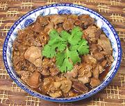

|
Chicken Gizzard & Liver AdoboPhilippines | ||||
| Serves: Effort: Sched: DoAhead: |
2 main *** 2-1/4 hrs Yes |
In Southeast Asia tough chicken gizzards and tender livers are often combined in the same dish - cooking the gizzards long and the livers short. This savory adobo is one of my favorites. | |||
|
1 ar 1 ----- 6 8 1 3 1/4 1/4 1 ----- |
# # --- cl oz t c c c --- |
Chicken Gizzards Water Chicken Livers -- Adobo Garlic Onions Peppercorns Bay Leaves Vinegar (1) Soy Sauce Water ----------- |
Make: - (2-1/4 hrs)
|